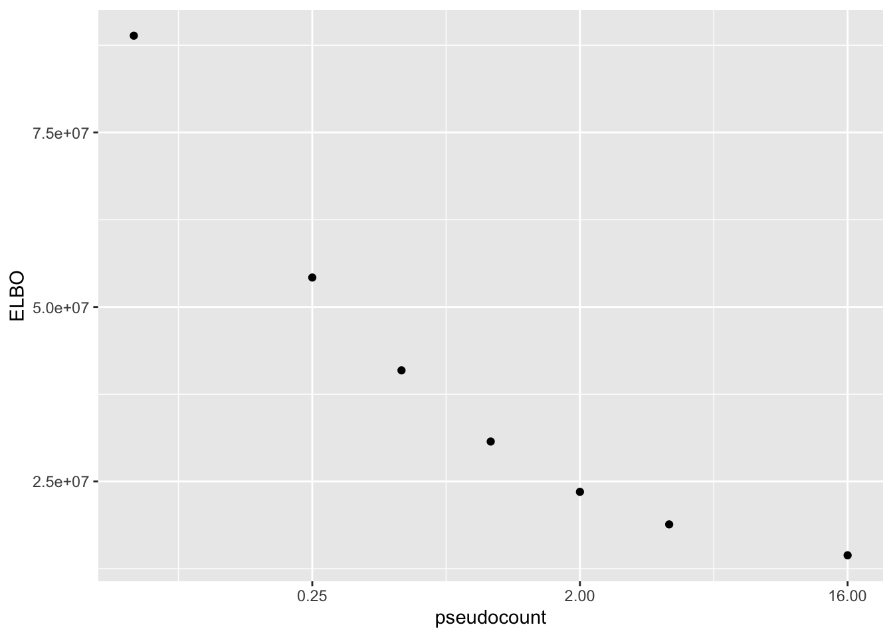
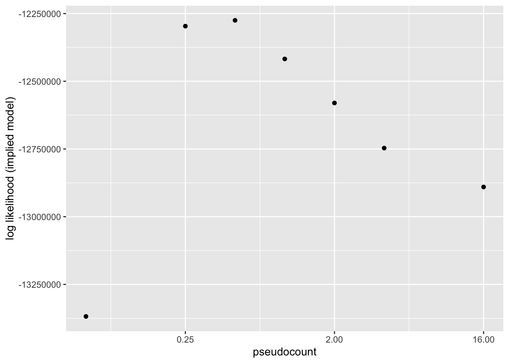
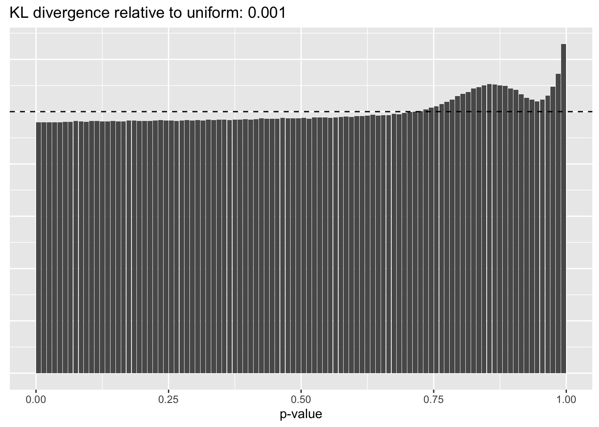
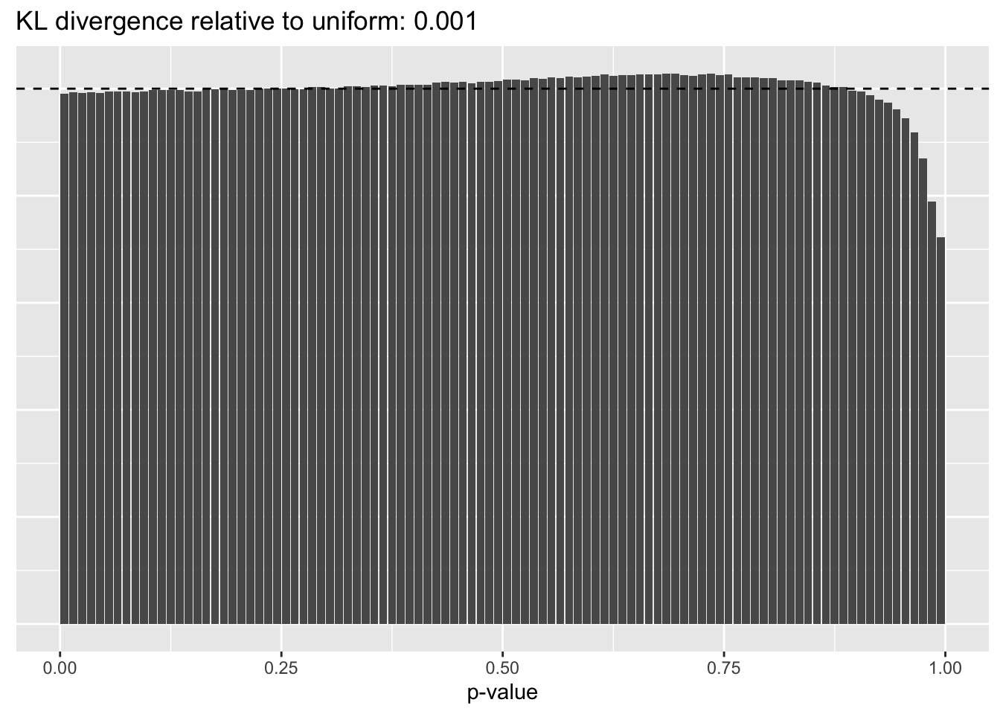
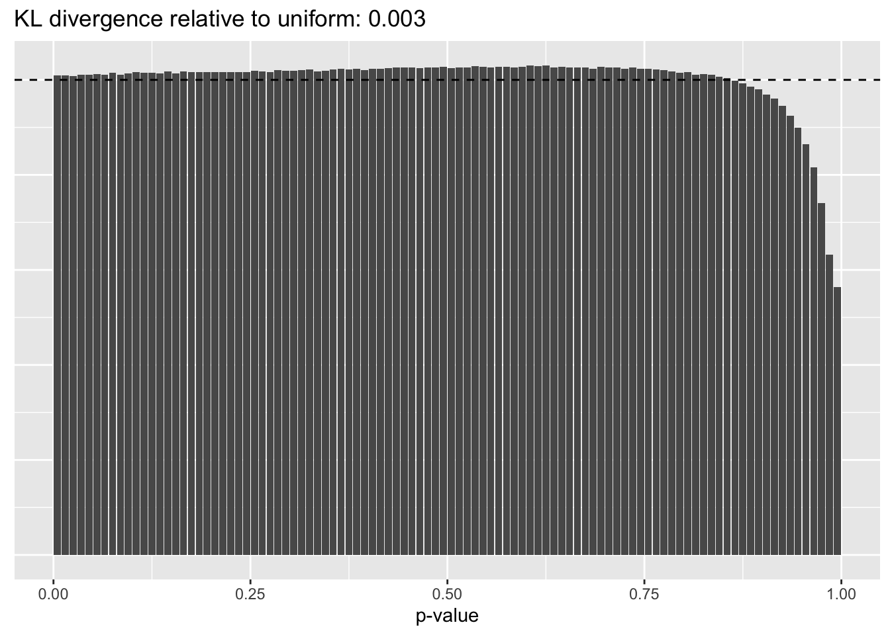
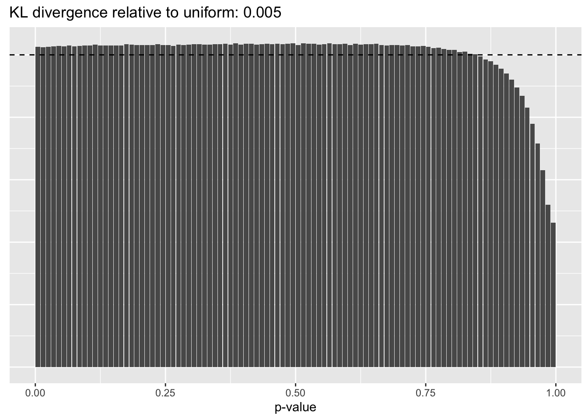
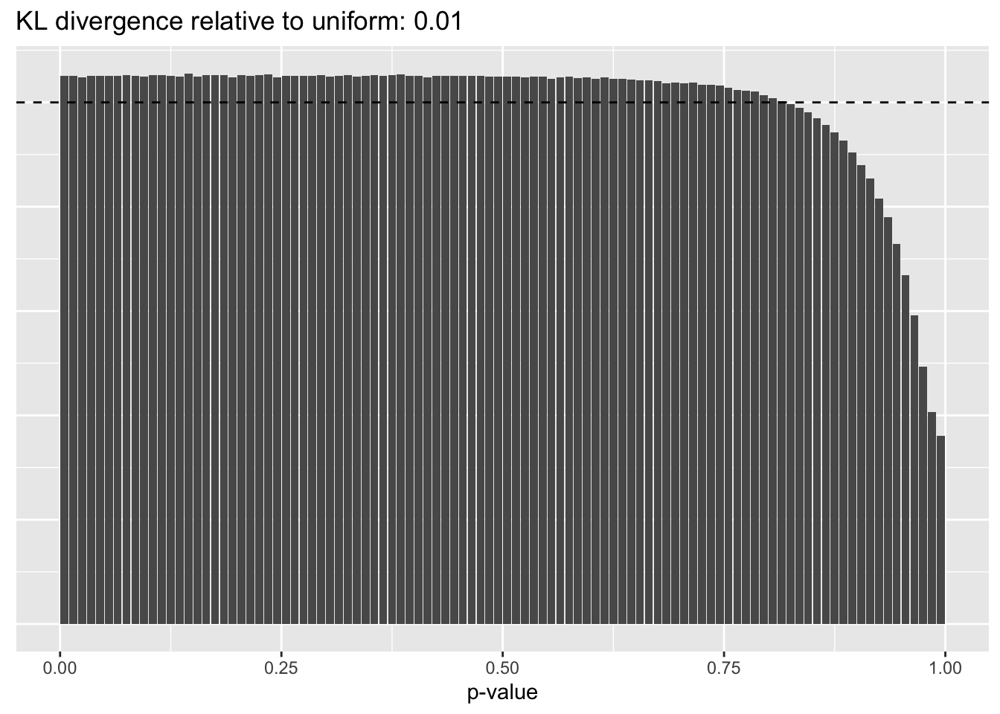
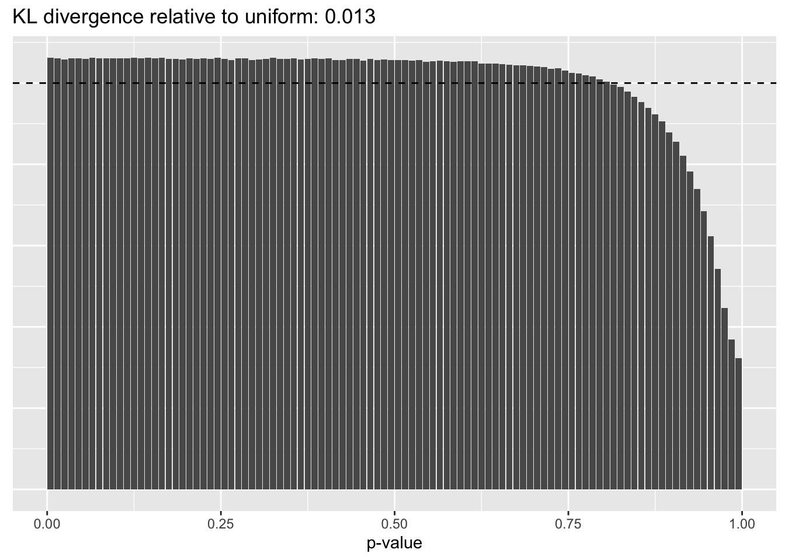

Last updated: 2020-03-19
Checks: 6 0
Knit directory: scFLASH/
This reproducible R Markdown analysis was created with workflowr (version 1.2.0). The Report tab describes the reproducibility checks that were applied when the results were created. The Past versions tab lists the development history.
Great! Since the R Markdown file has been committed to the Git repository, you know the exact version of the code that produced these results.
Great job! The global environment was empty. Objects defined in the global environment can affect the analysis in your R Markdown file in unknown ways. For reproduciblity it’s best to always run the code in an empty environment.
The command set.seed(20181103) was run prior to running the code in the R Markdown file. Setting a seed ensures that any results that rely on randomness, e.g. subsampling or permutations, are reproducible.
Great job! Recording the operating system, R version, and package versions is critical for reproducibility.
Nice! There were no cached chunks for this analysis, so you can be confident that you successfully produced the results during this run.
Great! You are using Git for version control. Tracking code development and connecting the code version to the results is critical for reproducibility. The version displayed above was the version of the Git repository at the time these results were generated.
Note that you need to be careful to ensure that all relevant files for the analysis have been committed to Git prior to generating the results (you can use wflow_publish or wflow_git_commit). workflowr only checks the R Markdown file, but you know if there are other scripts or data files that it depends on. Below is the status of the Git repository when the results were generated:
Ignored files:
Ignored: .DS_Store
Ignored: .Rhistory
Ignored: .Rproj.user/
Ignored: code/initialization/
Ignored: data-raw/10x_assigned_cell_types.R
Ignored: data/.DS_Store
Ignored: data/10x/
Ignored: data/Ensembl2Reactome.txt
Ignored: data/droplet.rds
Ignored: data/mus_pathways.rds
Ignored: output/backfit/
Ignored: output/final_montoro/
Ignored: output/lowrank/
Ignored: output/prior_type/
Ignored: output/pseudocount/
Ignored: output/pseudocount_redux/
Ignored: output/size_factors/
Ignored: output/var_reg/
Ignored: output/var_type/
Untracked files:
Untracked: analysis/NBapprox.Rmd
Untracked: analysis/trachea4.Rmd
Untracked: code/alt_montoro/
Untracked: code/missing_data.R
Untracked: code/prior_type/priortype_fits_pbmc.R
Untracked: code/pseudocount_redux/pseudocount_fits_pbmc.R
Untracked: code/pulseseq/
Untracked: code/size_factors/sizefactor_fits_pbmc.R
Untracked: code/trachea4.R
Untracked: mixsqp_fail.rds
Untracked: output/alt_montoro/
Untracked: output/pulseseq_fit.rds
Unstaged changes:
Modified: code/utils.R
Modified: data-raw/pbmc.R
Note that any generated files, e.g. HTML, png, CSS, etc., are not included in this status report because it is ok for generated content to have uncommitted changes.
These are the previous versions of the R Markdown and HTML files. If you’ve configured a remote Git repository (see ?wflow_git_remote), click on the hyperlinks in the table below to view them.
| File | Version | Author | Date | Message |
|---|---|---|---|---|
| Rmd | 0cb8e9d | Jason Willwerscheid | 2020-03-19 | wflow_publish(“analysis/pseudocount_redux_pbmc.Rmd”) |
I redo my previous analysis of pseudocounts using the PBMC 3k dataset. Fits were produced by adding 20 “greedy” factors and backfitting. The code can be viewed here.
source("./code/utils.R")
pbmc <- readRDS("./data/10x/pbmc.rds")
pbmc <- preprocess.pbmc(pbmc)
res <- readRDS("./output/pseudocount/pseudocount_fits_pbmc.rds")As expected, the ELBO is monotonically decreasing as a function of the pseudocount.
elbo.df <- data.frame(pseudocount = as.numeric(names(res)),
elbo = sapply(res, function(x) x$fl$elbo + x$elbo.adj))
ggplot(elbo.df, aes(x = pseudocount, y = elbo)) +
geom_point() +
scale_x_continuous(trans = "log2") +
labs(y = "ELBO")
An in the previous analysis, \(\alpha = 0.5\) does best.
llik.df <- data.frame(pseudocount = as.numeric(names(res)),
llik = sapply(res, function(x) x$p.vals$llik))
ggplot(llik.df, aes(x = pseudocount, y = llik)) +
geom_point() +
scale_x_continuous(trans = "log2") +
labs(y = "log likelihood (implied model)")
for (pc in names(res)) {
cat("\n### Pseudocount = ", pc, "\n")
plot(plot.p.vals(res[[pc]][["p.vals"]]))
cat("\n")
}





sessionInfo()R version 3.5.3 (2019-03-11)
Platform: x86_64-apple-darwin15.6.0 (64-bit)
Running under: macOS Mojave 10.14.6
Matrix products: default
BLAS: /Library/Frameworks/R.framework/Versions/3.5/Resources/lib/libRblas.0.dylib
LAPACK: /Library/Frameworks/R.framework/Versions/3.5/Resources/lib/libRlapack.dylib
locale:
[1] en_US.UTF-8/en_US.UTF-8/en_US.UTF-8/C/en_US.UTF-8/en_US.UTF-8
attached base packages:
[1] stats graphics grDevices utils datasets methods base
other attached packages:
[1] flashier_0.2.4 ggplot2_3.2.0 Matrix_1.2-15
loaded via a namespace (and not attached):
[1] Rcpp_1.0.1 compiler_3.5.3 pillar_1.3.1
[4] git2r_0.25.2 workflowr_1.2.0 iterators_1.0.10
[7] tools_3.5.3 digest_0.6.18 evaluate_0.13
[10] tibble_2.1.1 gtable_0.3.0 lattice_0.20-38
[13] pkgconfig_2.0.2 rlang_0.4.2 foreach_1.4.4
[16] parallel_3.5.3 yaml_2.2.0 ebnm_0.1-24
[19] xfun_0.6 withr_2.1.2 stringr_1.4.0
[22] dplyr_0.8.0.1 knitr_1.22 fs_1.2.7
[25] rprojroot_1.3-2 grid_3.5.3 tidyselect_0.2.5
[28] glue_1.3.1 R6_2.4.0 rmarkdown_1.12
[31] mixsqp_0.3-31 irlba_2.3.3 ashr_2.2-38
[34] purrr_0.3.2 magrittr_1.5 whisker_0.3-2
[37] MASS_7.3-51.1 codetools_0.2-16 backports_1.1.3
[40] scales_1.0.0 htmltools_0.3.6 assertthat_0.2.1
[43] colorspace_1.4-1 labeling_0.3 stringi_1.4.3
[46] pscl_1.5.2 doParallel_1.0.14 lazyeval_0.2.2
[49] munsell_0.5.0 truncnorm_1.0-8 SQUAREM_2017.10-1
[52] crayon_1.3.4